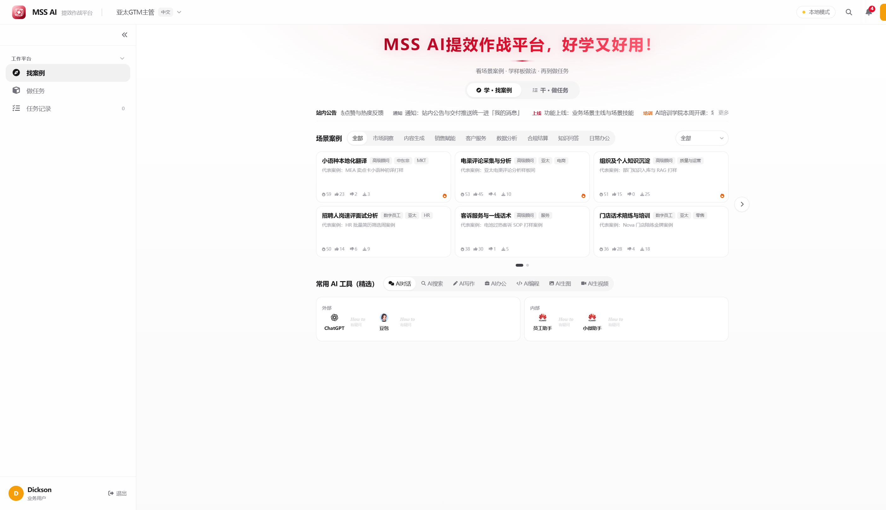
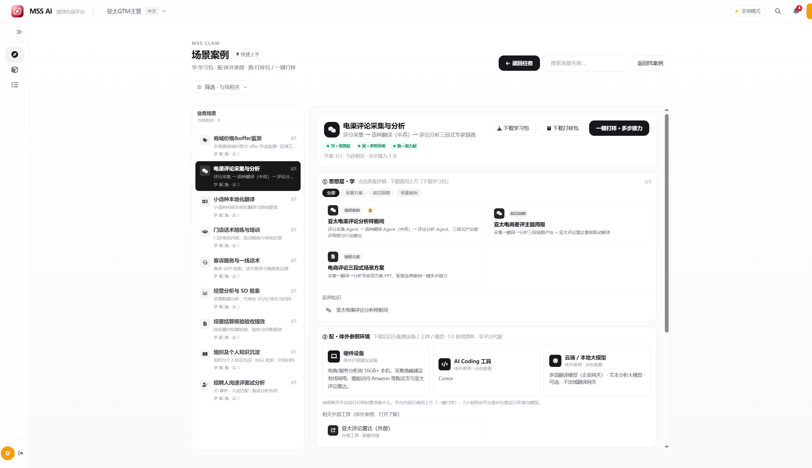
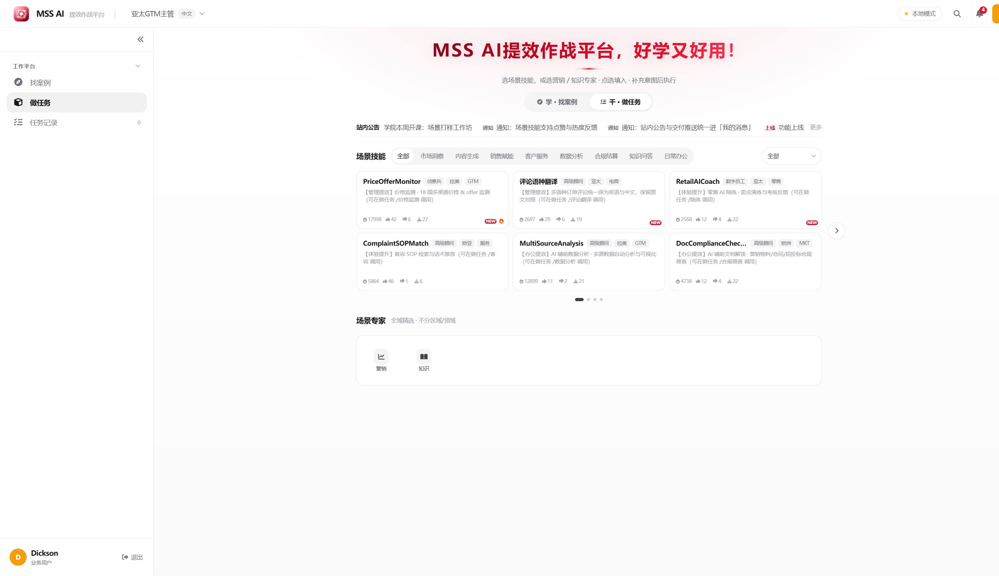
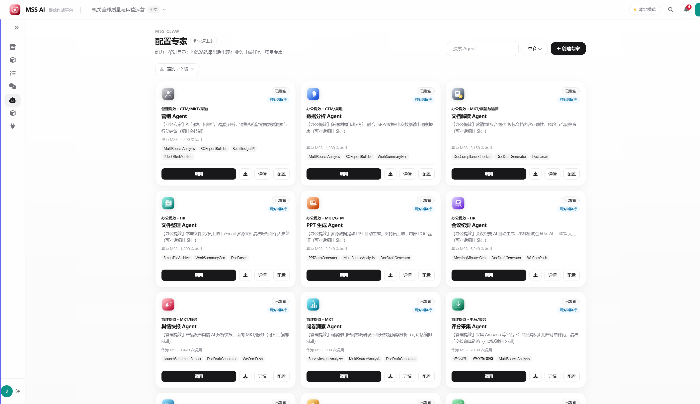

平台建设初期 · 定位与规划汇报
说明平台定位、架构边界与 1.0 建设目标，支撑内网生态样板落地与资源决策。
02 · 汇报目标
本次侧重 1.0：统一口径、确认目标与资源安排，形成可决策输出。
平台定位、学习→准备→开干主路径及能力边界形成一致表述。
确认 1.0（2026 年 8 月底）：内网可达、区域案例包、洞察工具与 How-to。
明确 1.0 供给与建设安排、对接责任与验收标准。
03 · 当前状态
外网可演示环境已具备完整主路径形态；下一步推进 1.0 内网生态样板建设。
双壳入口、场景样板间、学习→准备→开干、一键打样·多步接力、配置专家货架。
部署于公司外网，用于形态验证；非内网生产环境。
进内网 · NP+五区域案例包 · 洞察工具与 How-to（→ 2026 年 8 月底）。
04 · 总体打法
统一用户路径为学习 → 准备 → 开干；找案例与做任务为同一路径两端。
入口：找案例。覆盖方案、培训、洞察与案例，先完成方法学习。
场景准备层。1.0 为体外参照清单（用户自备），平台先交付方法与可运行样板。
入口：做任务；场景顶栏一键打样进入任务闭环，形成可复演工作流。
05 · 材料结构
定位明确价值，架构明确边界，资源明确 1.0 投入——三者一体，分方向讨论。
平台定义、服务对象与学习→准备→开干示范路径。
系统分层、能力构成与执行边界。
投入结构、开放策略；路线展望点到为止。
进入方向一
明确平台是什么、服务谁，以及「学习 → 准备 → 开干」的标准示范路径与双端入口。
07 · 方向一 · 定位
以业务场景为单元的企业 AI 提效作战平台，支撑方法学习、条件准备与任务执行闭环。
面向业务骨干与能力运营的企业 AI 提效作战平台：以业务场景为单元，把「学习 → 准备 → 开干」做成可发现、可学习、可打样、可沉淀的闭环。
场景中心 · 能力货架 · 任务闭环 · 运营配置轨
单聊工具 · 纯知识库 · 裸模型门户 · 无治理 Agent 集市
08 · 方向一 · 示范与入口
标准路径：登录 → 找案例 → 学习与准备 → 一键打样 → 任务沉淀；找案例与做任务为同一主路径两端。
进入业务主路径；运营侧可切换配置视角。
按业务域发现场景，进入样板间。
只读学习方法；对照准备清单。
顶栏发起多步接力，携带场景上下文。
计划确认、执行接力、交付预览与推送。



进入方向二
说明系统如何分层、能力如何组织，以及场景层内只读、顶栏开干的执行边界。
10 · 方向二 · 架构
发现层 / 场景层 / 执行层 + 运营配置轨；业务使用与能力运营职责分离。

11 · 方向二 · 能力与边界
能力按四象限组织；场景层内只读，下载与执行仅通过顶栏动作发起。
方案、培训、洞察与案例包，形成可学习方法资产。
硬件、AI Coding 与模型清单。1.0 以用户自备参照清单为主。
Agent / Skill / Tool、一键打样与任务闭环。
发布、精选、挂载、权限与展示配置。
进入方向三
聚焦 1.0 供给与建设双账本、建设目标与验收，以及角色权限与开放策略。
13 · 方向三 · 1.0 资源
1.0 需同步安排平台供给与建设投入，保障内网样板可落地、可验收。
供给与建设同表推进，避免内容空壳或样板空转。
14 · 方向三 · 建设规划
本次决策聚焦 1.0（2026 年 8 月底）；2.0 / 3.0 仅作路线展望，点到为止。
完成时间 · 2026 年 8 月底
展望 · 2.0
接入内模；打通 Agent / Skill 主链路；案例由可演示升级为可调用运行。
展望 · 3.0
接入内部数据与 API；完善编排、权限与工具市场；支撑自动化与治理运营。
15 · 方向三 · 1.0 权限
1.0 按角色配置权限；优先推广学习，控制打样开放范围。
16 · 确认与决策事项
先确认统一口径，再形成 1.0 五项决策：目标、投入、示范口径、开放策略、样板范围。
17 · 资源请求与下一步
申请批准 1.0 建设目标、资源与对接责任，支撑 2026 年 8 月底验收。
确认 1.0 目标、样板范围与对内口径。
内网接入计划与区域案例包清单。
案例包落地；洞察工具与 How-to 收录。
内网可达 · 样板可运行 · 指引完备。
18 · 结束
定位 · 架构 · 资源 · 聚焦 1.0
MSSClaw · 平台建设初期汇报材料